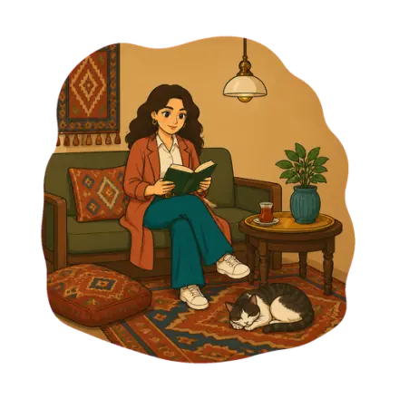

مراقبة مستمرة، ليلاً ونهاراً
يجمع بوملێرزە ثلاث شبكات علمية مستقلة (USGS، EMSC، GEOFON) في قائمة حية واحدة يمكنك الوثوق بها.

معلومات زلزالية سريعة وموثوقة، بلغتك، من باحثين في مخاطر الزلازل يعملون على هذه المنطقة يومياً.
ما الذي يقدمه
كوردستان أولاً: زلازل قريبة منك، من USGS، EMSC وGEOFON، بخط كبير وواضح لحظة فتح التطبيق.
«شعرت به!»: لمسة واحدة، في ثوانٍ، حتى من دون اتصال. كل تقرير يبني صورة مجتمعية حقيقية لكيفية الشعور بالزلازل على الأرض.
خرائط شدة اهتزاز خاصة بنا، تُحسَب لزلازل المنطقة، بما فيها أحداث لا تضع لها أي خدمة عالمية خريطة أصلاً، مع مصادرها وحالة مراجعتها دائماً.
إرشادات بلغة بسيطة لقبل الزلزال وأثناءه وبعده، كُتبت لبيوت كوردستان وشوارعها، لا مترجمة من مكان آخر.
كيف يعمل العلم، وكيف تتحقق منه
يُتحقَّق من كل زلزال مقابل ثلاث شبكات مستقلة ويُدمَج في سجل واحد. ولهذه المنطقة، يحسب بوملێرزە أيضاً خرائط اهتزازه الخاصة، لا نسخة عن خدمة أخرى.
يرسل USGS وEMSC وGEOFON كل منها تقريراً عن الزلزال نفسه. يدمجها بوملێرزە في إدخال واحد، لا ثلاثة متضاربة.
لزلازل المنطقة، يحسب بوملێرزە خريطة شدة اهتزاز EMS-98 خاصة به من نماذج حركة الأرض والتقارير الشعورية. تُبيّن كل خريطة حالة مراجعتها.
كتالوج عام قابل للتصفح لزلازل المنطقة، حتى يتمكن أي شخص من معرفة ما حدث وأين.
تصفح الأطلسالتطبيق ومحرك خرائط الاهتزاز وخط أنابيب البيانات مفتوحة تحت رخصة Apache 2.0.
عرض المستودعاحصل على بوملێرزە
بوملێرزە في تطوير نشط. التطبيق الكامل يعمل اليوم بالفعل كتطبيق ويب، دون الحاجة لتثبيت:
أسئلة، تصحيحات، أو ملاحظات: hello@bumelerze.com